Academic organising, student support and education volunteering.
Co-organised the 7th Manchester Sino-British Young Scholars Summit (24–25 August 2026), hosted by CSSA Manchester with MDPI under the guidance of the Education Office of the Chinese Consulate-General in Manchester. Themed on sustainable industrial transformation and technological innovation, it ran two days of keynotes, roundtables and young-scholar sessions on sustainability and AI. I worked on planning, sponsor liaison, speaker invitations, event materials and guest reception, and edited the Day 2 recap. Day 2 recap (Chinese)
Awarded the title of Cultural Ambassador of Ireland by Education in Ireland, China; presented at the Enterprise Ireland office in Beijing. Certificate
Supported the international office with social media and recruitment interviews; answered questions from more than 50 incoming students and followed up on their applications.
Volunteered at PEER's summer camp at Zheng'an No. 1 Middle School in Guizhou, part of a programme bringing liberal-arts education to under-resourced regions. Designed two seminar courses, on critical thinking and on oral history, wrote about 85 pages of teaching material, and led more than 10 high-school students in community exploration, interviews and observation that ended in a collection of their work. Camp report (Chinese)
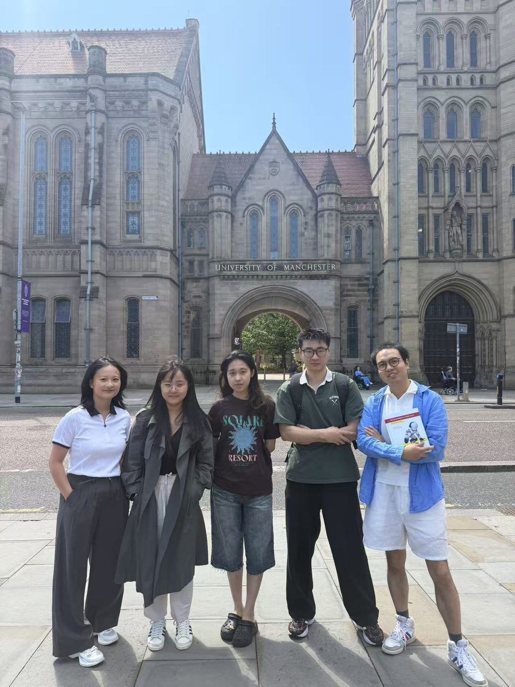
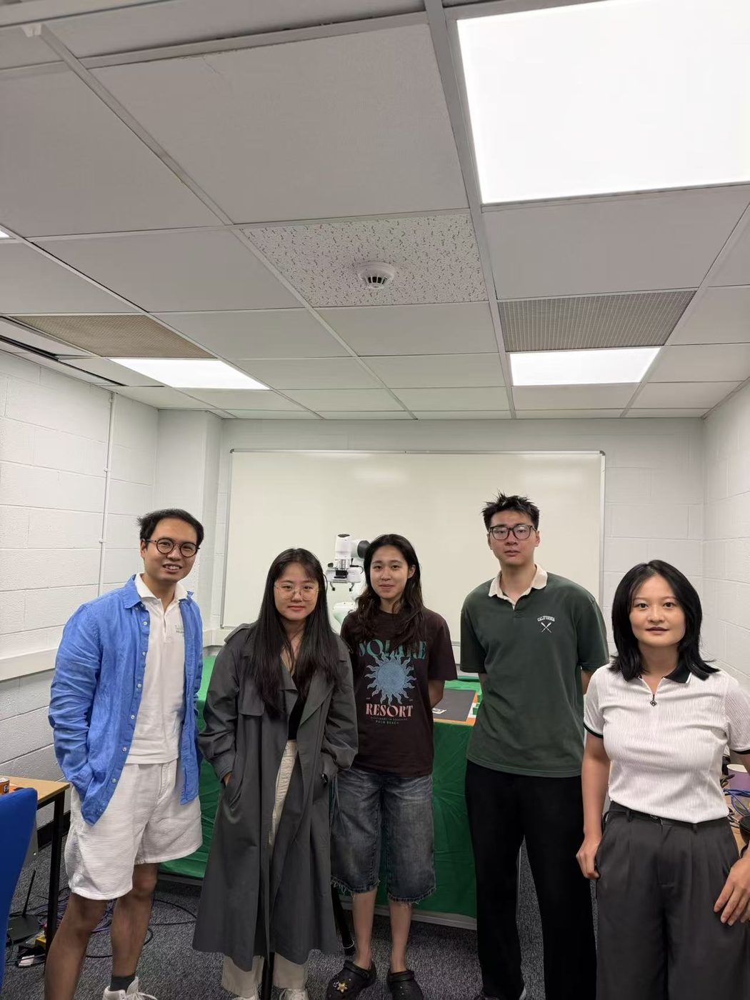
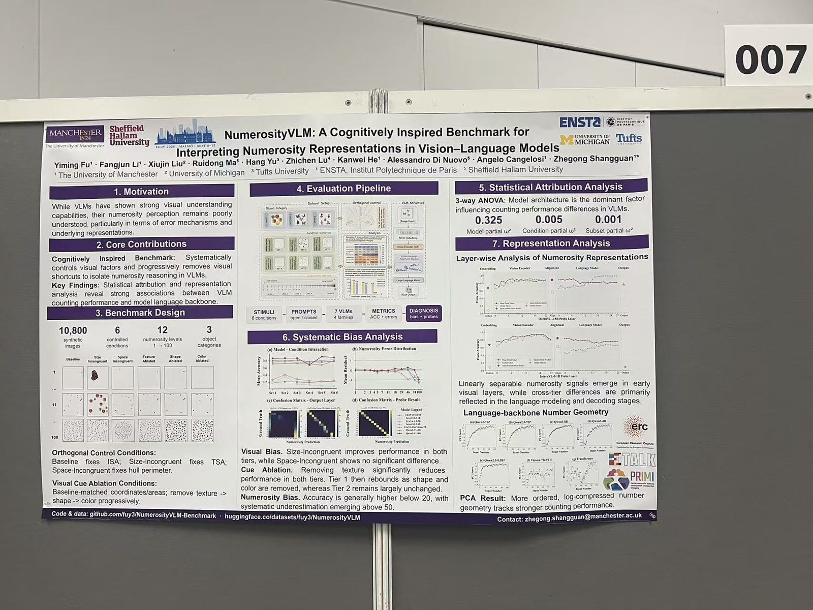
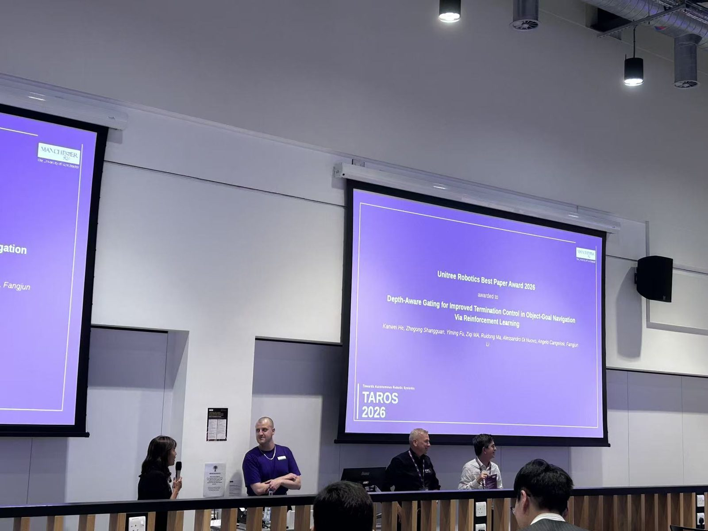
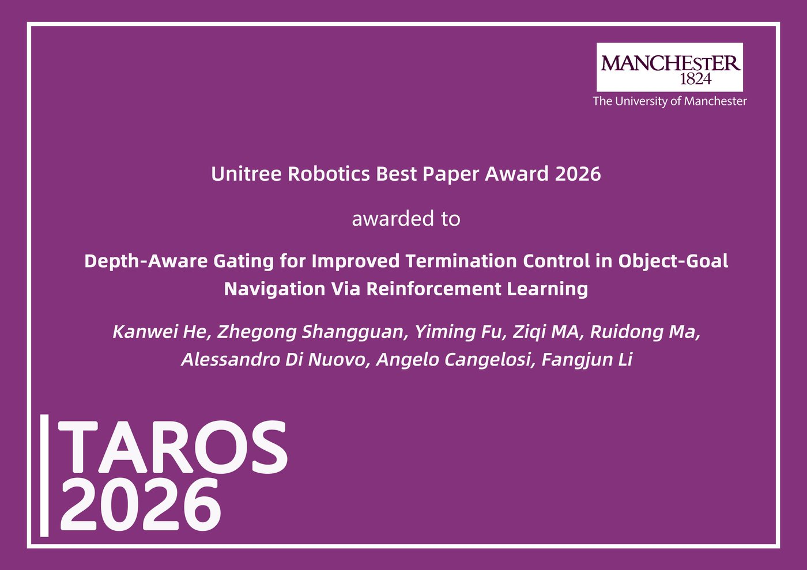
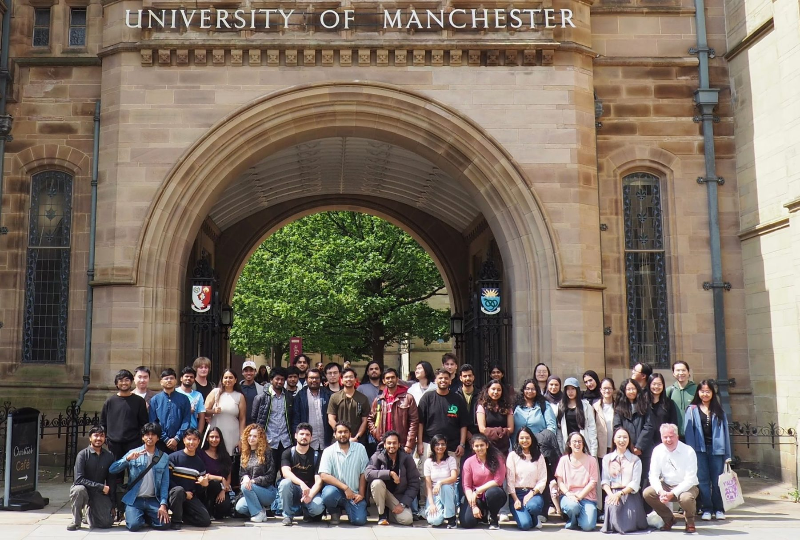
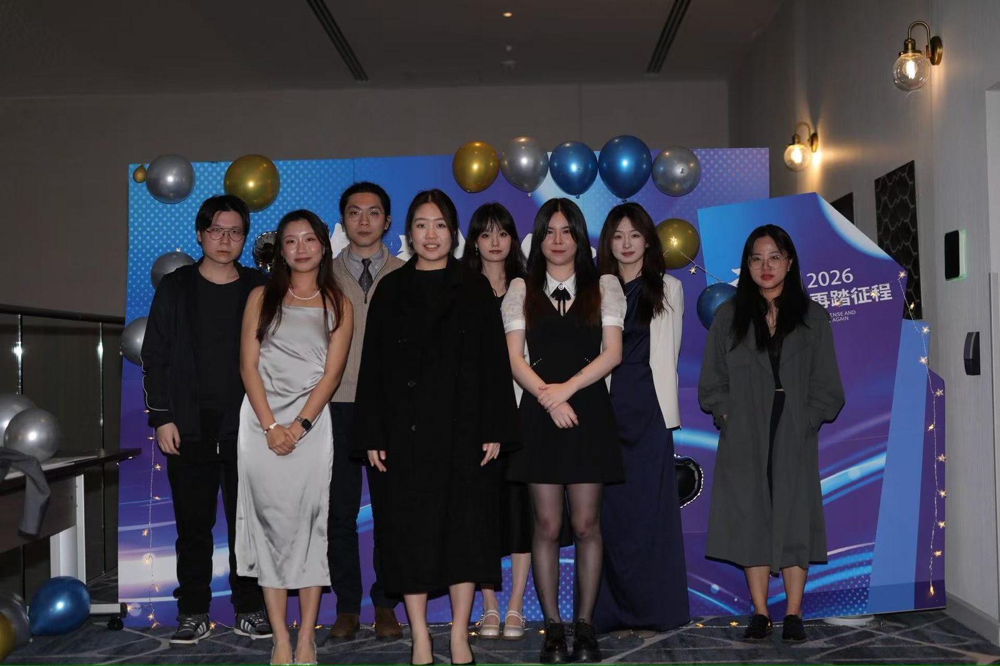
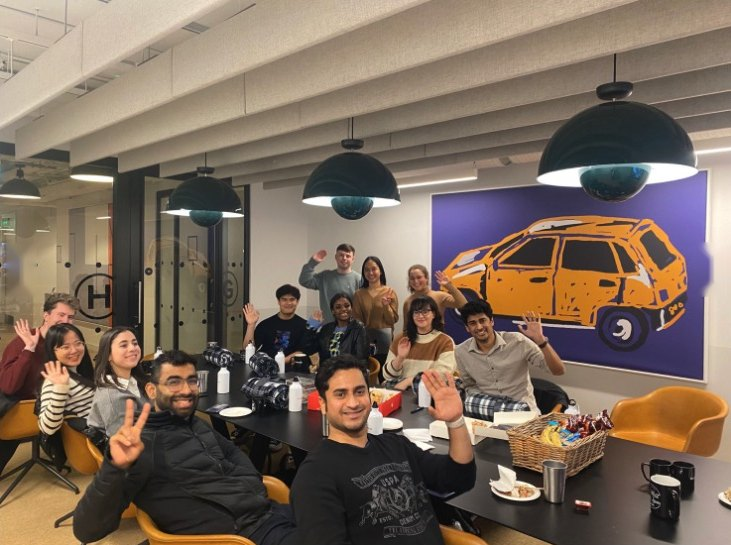
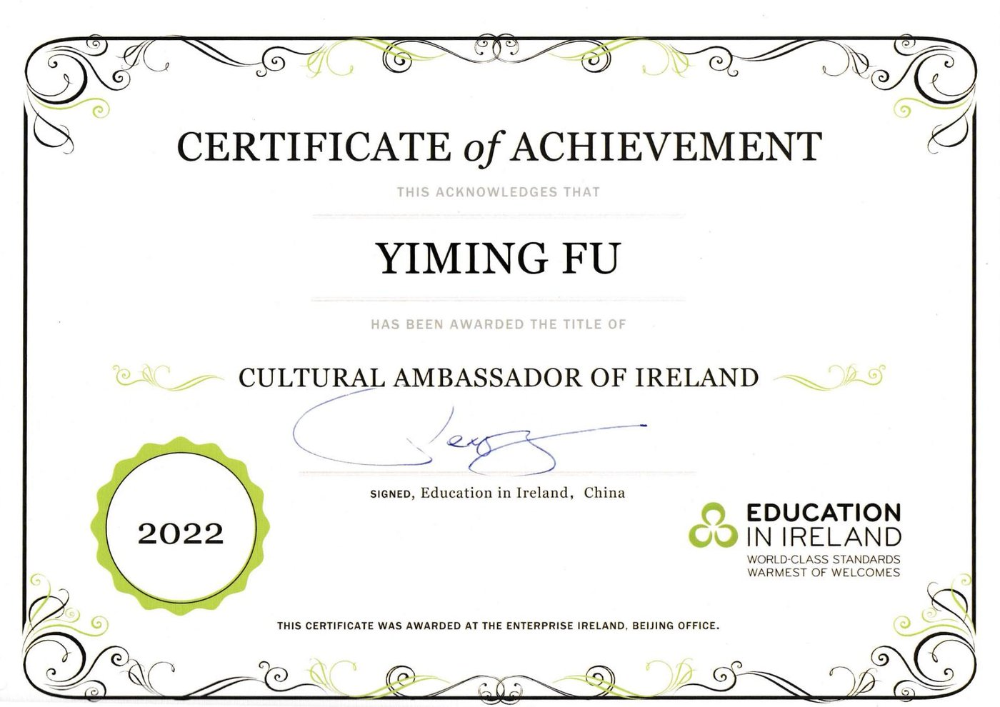
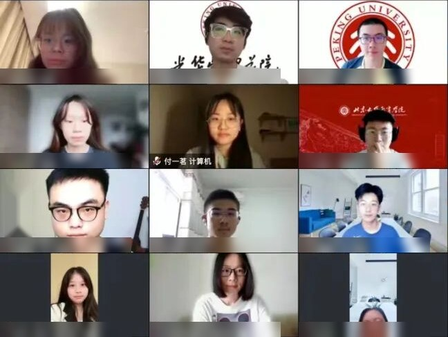
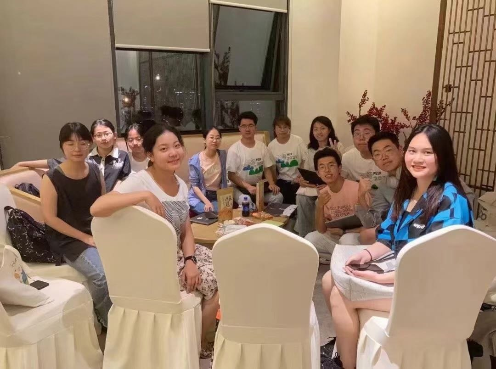
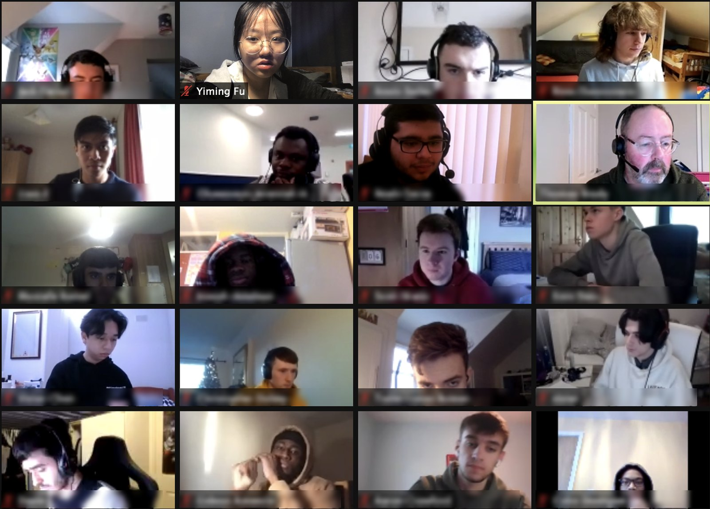